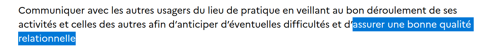
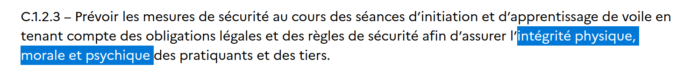
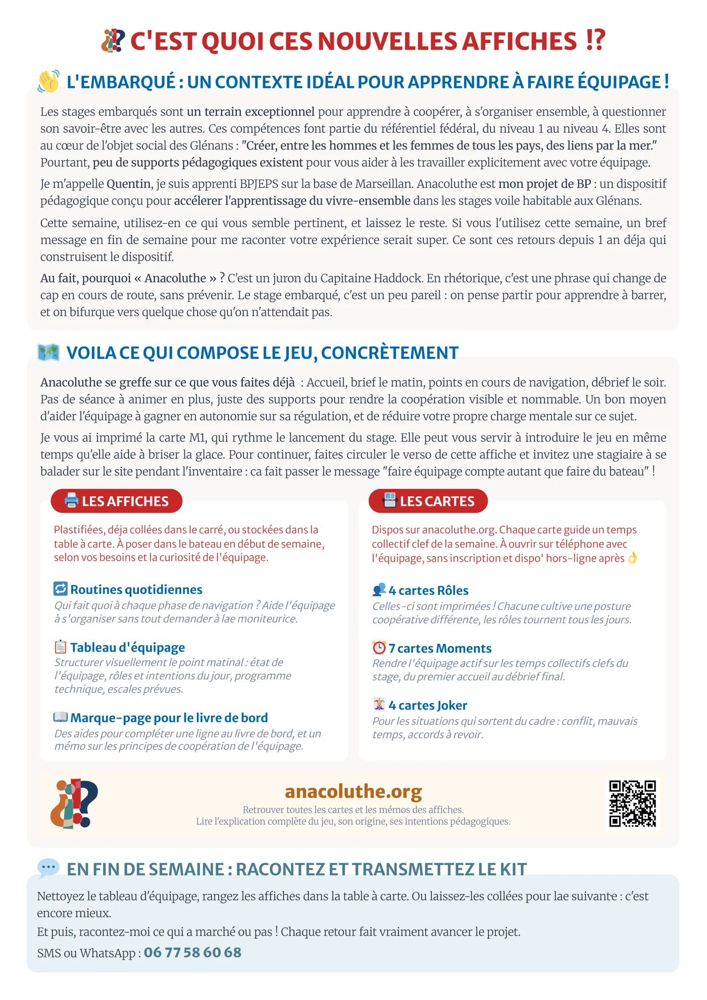
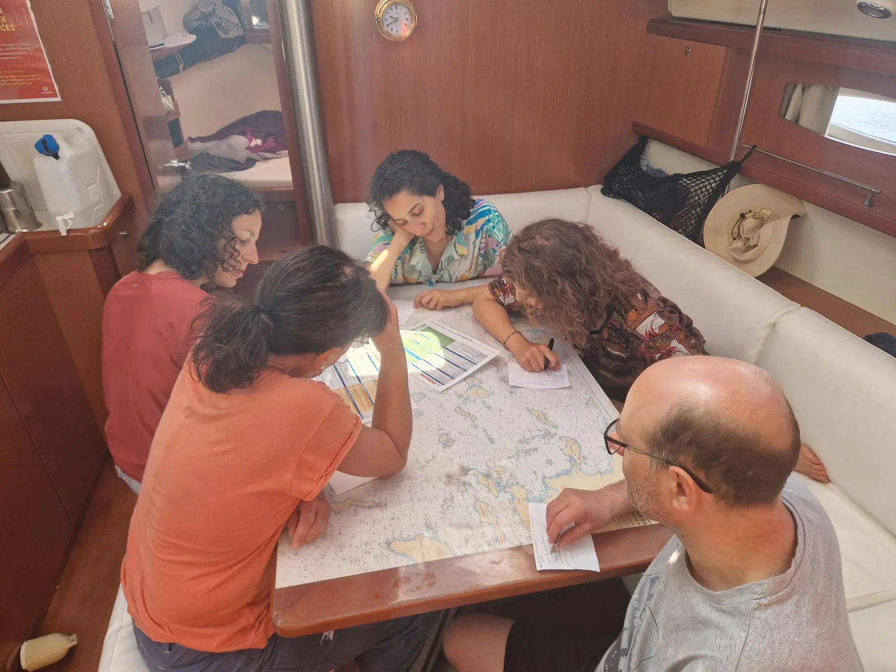

¿¡ Anacoluthe !?
Soutenance UC1-UC2 · BPJEPS voile habitable
Comment donner aux moniteurices
les moyens d'animer le vivre-ensemble
dans un contexte qui génère autant de tensions
que d'opportunités d'apprentissage ?
D'où vient cette question ?

Mon encadrement bénévole en croisière
et ce que j'y ai observé de la coopération

Les échanges avec Romain Gauvrit
responsable croisière
à venir
Les rapports de mer
des tensions humaines
qui finissent en incidents techniques
Pour la technique : cartes de progression, manuel, fiches.
Pour le vivre-ensemble, très peu d'outils.
« … par la mer, … à la vie collective »


Extraits des statuts des Glénans.

Ce que les référentiels demandent déjà
Les stagiaires · carte de progression FFVoile


Les moniteurices · CQP-IV



Ces compétences figurent déjà au programme. Le projet donne des outils pour les travailler.
Le terrain


La voile habitable à Marseillan, par an : environ 2 000 stagiaires,
une centaine de moniteurices, 12 à 14 voiliers.
Des méthodes qui découlent des contraintes
Les contraintes
- ma disponibilité : uniquement autour de l'encadrement, des stages et des moniteurices
- mes compétences et mes soutiens
- un budget réduit
- une forte incertitude de calendrier
La méthode
- une conception itérative, avec les usagers
- des formations inspirées de l'éducation populaire
- des mécénats de compétences
Trois publics, reliés
Les encadrants des moniteurices
RTQ, responsables croisière
être moins sollicités sur les tensions, pour accompagner les moniteurices
Les moniteurices
débutantes et expérimentées
animer le vivre-ensemble et l'enseigner
Les stagiaires
six jours à bord, en équipage
apprendre à coopérer en même temps qu'à naviguer
Le projet s'adresse aux trois, et s'appuie sur ce qui les relie.
Deux moniteurices types
en FPI ou juste après
La débutante
s'organiser, se faire aider par son équipage
« Je sens bien quand ça coince, mais je ne sais pas toujours comment relancer sans être maladroit. »
parfois de mauvaises habitudes
L'expérimentée
aller plus loin, être légitime sur l'animation au-delà de la technique
« Les stagiaires me respectent pour la manœuvre, mais dès qu'il s'agit de gérer un conflit, je perds mes moyens. »
Ce qu'on veut leur faire acquérir
À l'issue de la démarche, est capable de ...
animer un stage en autonomie
La débutante
- organiser la vie à bord en s'appuyant sur son équipage
- repérer une tension et savoir par où commencer
animer un stage en autonomie
L'expérimentée
- animer les moments clefs pour faire coopérer l'équipage
- laisser l'équipage réguler lui-même une tension
- questionner sa posture d'animation
en mer,
et de retour à terre
Lae stagiaire
- tenir un rôle dans l'organisation collective
- dire une tension tôt et la régler ensemble
- questionner sa posture relationnelle
Une équipe pour y arriver
Quatre phases sur deux saisons

L'enjeu majeur de chaque phase
Ce que l'équipe a produit

Une boîte à outils
pour les équipages, en embarqué

Des ateliers-formations
pour les moniteurices
de démarrage à venir
Des outils rénovés
pour les encadrants des moniteurices : supports et briefs de démarrage
Une boîte à outils autonome
- Ce qui est imprimé à bord s'utilise en totale autonomie
- Chaque bloc est indépendant : on prend ce qui sert, on laisse le reste
- Un mode d'emploi est rangé avec le kit : une affiche A4 recto-verso



La co-conception assure l'adéquation besoin - outil
Diverger14 entretiens, 3 ateliers : les moniteurices nomment les tensions vécues à bord
ConvergerDes besoins communs : s'organiser, s'écouter, se dire les choses
DivergerV1 à V3 : on prototype avec moniteurices et stagiaires, on teste en stage
ConvergerV4, V5 : on élague. Ne restent que les cartes qui servent vraiment un besoin
Une carte > un besoin spécifique
Le vivre-ensemble, c'est pouvoir s'organiser collectivement, s'écouter, se dire les choses, se questionner soi-même…
pour la débutante : s'organiser, se faire aider par l'équipage
pour les stagiaires curieux : un rôle qui n'existait pas à bord
pour toutes, même les habituées : un moment crucial et obligatoire
pour les stagiaires, et les moniteurices peu intéressées par le dispositif
Hors des bateaux, des affiches sur la base
Pour que le kit soit pris en compte, on en parle aussi sur les bases.
- Faire savoir l'initiative : le kit et les formations
- Acculturer au vocabulaire du vivre-ensemble


Phase 1 · diagnostic
Faire avec, dès le diagnostic
Ateliers de diagnostic et de prototypage · février-mars 2025 · 3 ateliers pair-à-pair de 1 h 30 · 8 moniteurices, 2 à 3 par atelier · ils produisent la V1
À l'issue, la moniteurice est capable de
- nommer une tension vécue à bord et en décrire les effets
- distinguer l'organisation du bord et la relation
- formuler ce qui lui manque pour agir
- prototyper une réponse avec ses pairs, et la défendre devant eux
de l'atelier à venir
Phase 2 · conception itérative
Concevoir l'outil,
c'était déjà former
Co-conception avec 12 moniteurices testeurs · cycles de test en stage de 4 à 6 semaines · de la V2 à la V5
À l'issue, la moniteurice est capable de
- nommer les situations que l'outil doit couvrir
- tester une version en stage et en rapporter un retour précis
- arbitrer entre deux cartes et défendre son choix devant le groupe
- parler du vivre-ensemble avec un vocabulaire commun

Phase 2 · conception itérative
Tester en stage, avec les stagiaires
Chaque test en stage est un face-à-face avec un équipage.
- des stages avec le kit à bord
- certaines semaines sans, pour garder un point de comparaison

Phase 3 · déploiement et formation
Les ateliers-formations
Ateliers-formations à l'animation du vivre-ensemble · 4 ateliers du vendredi de 2 h et 1 atelier FPI2 · arpentage, co-développement, apports
À l'issue, la moniteurice est capable de
- relier les constats du diagnostic à sa propre pratique
- analyser une situation vécue avec ses pairs et en tirer des pistes
- choisir dans le kit ce qu'elle mettra en œuvre sur son prochain stage
- parler du vivre-ensemble avec un vocabulaire commun

Phase 3 · la débutante
L'atelier FPI2
Le meilleur moment pour parler d'animation du vivre-ensemble avec des débutantes : pendant leur formation.
À compléter : autres actions vers la débutante, déroulé de l'atelier FPI2.
à venir
Phase 3 · l'expérimentée
Les ateliers du vendredi
- Partir de leurs situations réelles : arpentage, co-développement, apports sur la coopération
- Quatre ateliers de 2 h, annoncés le samedi au démarrage des stages
du vendredi à venir
Phase 3 · les encadrants
Outiller le brief
RTQ et responsables croisière briefent les moniteurices chaque samedi.
- des briefs sur ce qui se passe dans le projet
- des briefs de démarrage et de déploiement testés avec eux, qui intègrent et présentent le dispositif
- une formation au kit, pour mieux en parler aux moniteurices
À compléter : à quelle phase chaque action, et ce qu'ils en ont fait.
Après le projet,
ce qui reste
- Une partie des supports de démarrage de stage rénovés
- Huit bateaux équipés durablement : affiches collées, kits complets dans la table à carte
- Des kits et de la documentation en ressourcerie, aux côtés des autres supports


L'écart au prévu
Ce qui explique l'écart
- ma disponibilité hors face-à-face
- des leviers d'accès saturés, dont le brief du samedi
- une inertie de calendrier
- ateliers du vendredi
- atelier FPI2
- accompagnements individuels
- apports dans les briefs de démarrage
- matériaux distribués rénovés
Phase 4 · évaluer
Les tensions se disent plus tôt, l'équipage est plus autonome
La parole
« Les tensions ont été exprimées avant de dégrader le climat »
5 moniteurices sur 6 le constatent aussi.
L'organisation
« Les moments d'organisation ont été fluides »
Pour que ça marche des outils et des encadrant·es formé·es. Sans sensibilisation - formation, le kit reste souvent dans la table à cartes.
Ce que je préconise
« En 2035, l'association Les Glénans est un lieu d'expérimentation de nouveaux possibles »
Cap à dix ans voté par le conseil d'administration, novembre 2025 : autonomie et interdépendance par la navigation, faire société.
À développer : pour chaque préconisation, qui, quoi, quand, avec quels moyens. Court, moyen, long terme.
Bilan pour moi
Ce que ça m'a appris → ce que je ferais autrement
- J'ai sous-estimé la conduite au profit de la conceptionchiffrer dès le départ le temps de formation
- Ma disponibilité a fait exister le projet, sans pouvoir se transmettremettre davantage d'énergie dans le plaidoyer en interne
- Un projet d'animation se conduit comme un processus sociall'informel d'abord, avec les salariés et le CEB
Et ensuite